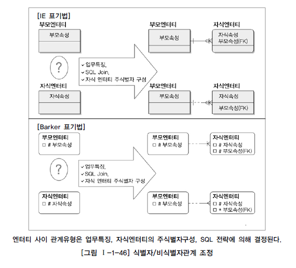

2. 데이터베이스 모델링¶
본 내용은 DBGuide.net 목차/내용을 기반으로 작성자의 입장에서 요점을 정리한 문서입니다.
2.1. 데이터 모델링¶
모델링이란 쉽게말해 실세계의 사물을 표기법에 의해 규칙을 가지고 표현하는 것을 뜻한다. 이는 클래스를 정의 하는것과 비슷하다.
모델링의 특징으로 추상화, 단순화, 명확화가 있다. 추상화는 현실세계의 것을 일정한 형식에 맞춰 표현하는것을 뜻한다. 단순화는 추상화 할때 정해진 규칙이 쉽게 이해되어야 한다는 성질이고 명확하는 쉬울뿐만 아니라 애매모호함 없이 정확하게 표현해야 한다는 뜻이다.
데이터 모델링 이란 정보시스템을 구축하기 위해 어떤 데이터가 존재하는지 또는 업무가 필요로 하는 정보는 무엇인지 분석하는 방법을 말한다. 이는 업무를 분석하여 업무에 이해를 도울뿐만 아니라 데이터베이스를 구축하는 기본적인 작업이 됨을 뜻한다.
데이터 모델링이 중요한 이유를 나열해 보자.
- 다른 수많은 어플리케이션이 연관되어 있으므로 모델의 수정/변경은 엄청난 파급효과 를 가져온다.
- 시스템(업무)에서 사용될 정보들을 가장 명확하고 간결하게 표현 할 수 있는 도구이다.
- 결정된 데이터 모델에 의해 향후 몇년 간의 데이터의 품질 결정된다. 여기서 품질이란 데이터의 정확성/ 비지니스적인 가치를 뜻한다.
따라서 이러한 데이터 모델링은 시스템을 분석/설계 하는 매우 중요한 작업이다. 모델링을 진행할 때 피해야할 점은 중복 , 비유연성 , 비일관성 이 있다. 중복 은 당연히 데이터의 중복 저장을 뜻한다. 비유연성 같은 경우는 데이터가 지나치게 프로세스에 종속적인 경우로서 빈번한 모델에 대한 수정/변경이 일어나는것을 말한다. 비일관성 은 데이터간의 연관된 정보가 있는데 이를 무시하고 데이터가 갱신되는 경우이다.
2.1.1. 모델링의 3단계 진행¶
학부 시절 데이터베이스 시간에 배웠듯이 데이터 모델링은 개념적 모델링, 논리적 모델링, 물리적 모델링 3단계로 진행된다.
- 개념적 모델링 작업은 데이터 요구사항을 분석하여 핵심 엔티티를 추출하고 관계를 발견하는 작업이다. 엔티티의 속성과 키를 결정하지 않는다. 그리고 엔티티-관계 다이어 그램을 작성한다.
- 논리적 데이터 모델링 은 모델의 속성과 키(식별자)를 결정하고 정규화를 하는 과정이다.
- 물리적 데이터 모델링은 논리 데이터 모델이 데이터베이스의 어떤 타입으로 표현될 것인지 나타내는다.
폭포수 모델 프로젝트의 생명주기와 데이터 모델링 작업은 서로 연관되어 표현될 수 있다. 분석 -> 설계 -> 개발 -> 테스트 -> 이행(운영) 순으로 프로젝트가 수성된다면 모델링 주기는 논리/개념 모델링 -> 물리적 모델링 -> DB 구축 -> DB 튜닝 -> DB전환 로 나타낼 수 있다. 어플리케이션 개발은 프로세스 모델링 -> APP 설계 -> APP 개발 -> APP 테스트 -> APP 설치 순으로 나타낼 수 있다.
데이터 모델링에서 독립성을 유지 하는 것 역시 고려되어야 한다. ANSI/SPARC 3단계 데이터독립성 모델은 상호간의 영향에서 벗어나 고유의 기능을 제공하면서 그 기능을 극대화하는 것이다. 예를들면 고객 개개인 별로 필요한 데이터 모델은 다르지만 이를 초월하여 하나의 개념적 모델로 만드는것 마지막으로 이것을 물리적으로 구축하는 것을 데이터 독립적으로 만드는 방식이다. 외부단계(고객 개개인의 View) -> 개념단계(하나로 통합) -> 내부단계(물리적으로 구축) 이 ANSI/SPARC 모델이다.
결국 이러한 작업이 데이터를 사용하는 외부 단계의 고객들을 내부와 독립시키는 작업 이라는 뜻으로 논리적 독립성 (개념 스키마가 변경되어도 외부에 영향을 미치지 않는다), 물리적 독립성 (내부 스키마가 변경되어도 외부/개념 스키마는 영향 받지 않는다.) 이라는 용어가 있다. 각 단계는 모델 독립을 위한 작업이지만 만에 하나 만약 수정사항이 생긴다면 DBA(Database Administrator)가 DDL을 적절하게 수정하게된다.
2.1.2. 데이터 모델링 용어¶
앞에 용어가 복수 뒤가 단수를 뜻한다.
- 어떤 것(Thing) - 엔티티 타입 / 엔티티 또는 엔티티 / 인스턴스
- 연관(Association) - 관계 / 페어링(잘안씀)
- 어떤것의 성격 - 속성 / 속성값
2.1.3. 데이터 모델링 진행자¶
전문 모델러, DBA, 현업업무전문가, 프로젝트 개발자가 모두 참여한다.
2.1.4. 좋은 품질의 데이터 모델의 요소¶
- 완전성 (모든 데이터가 데이터 모델에 정의되 있음)
- 중복배제 (동일한 사실은 단 한번만 기록되어야 함)
- 업무규칙 (데이터 모델을 활용하는 모든 사용자가 공유할 수 있도록 제공)
- 데이터 재사용 (어플리케이션과 프로세스에 독립적으로 설계되어야 한다)
- 의사소통 (설계자가 정의한 업무 규칙들을 동일한 의미로 받아들이고 활용할 수 있게함)
- 통합성 (동일한 성격의 데이터를 한번만 정의하고 여러영역에서 참조할 수 있도록 해야함)
2.2. 데이터 모델 표기법 (ERD)¶
ERD는 여러가지 표기법이 있다. 이중 일반적으로 Information Engineering 표기법이 많이 사용된다. (ERWin, ERStudio)
ERD 작업 순서는 다음과 같다.
- 엔티티를 그린다.
- 엔티티를 적절하게 배치한다. (중요한 엔티티는 좌상단, 엄무의 중심이 되는 엔티티는 중앙에 배치하기도 한다.)
- 엔티티간 관계를 설정한다.
- 관계명을 기술한다.
- 관계의 참여도를 기술한다. (관계차수 1:n, 1:1처럼)
- 관계의 필수여부를 기술한다.
2.3. 엔티티(Entity)¶
엔티티란 업무 활동이나 서비스에서 지속적으로 관심을 가져야할 대상이다. 엔티티 집합은 동일한 속성을 가진 엔티티들의 모임이다. 예를들면 포탈 서비스에서 사용자, 게시글과 같은 것을 엔티티로 볼 수 있다. 속성에 대한 부가적인 정보가 저장될 필요가 있다면 엔티티로 변환하는 것이 낫다.
업무에 필요하고 유용한 정보를 저장하고 관리하기 위한 집합적인 것을 뜻한다. 엔티티는 해당 업무에서 관리하고자 하는 정보이다. 유일한 식별자에 의해 식별이 가능해야 하며 인스턴스의 집합을 뜻한다. 그외 특징으로는 업무프로세스에 이용되어야 하고 하나 이상의 속성을 포함하고 있어야 하며 관계가 존재하여야 한다. (관계는 필수는 아니지만 적절하게 모델링 되었다면 관계가 존재한다.)
엔티티의 분류는 유무형에 따른 분류 , 발생 시점에 따른 분류 가 있다. 유무형에 따른 분류는 유형 엔티티(사원, 물품), 개념 엔티티(조직, 상품), 사건 엔티티(사건 발생량이 매우많으며 주문, 청구, 미납 등이 이에 포함됨) 등이 있다. 발생 시점에 따른 분류는 기본 엔티티(독립적으로 생성가능), 중심 엔티티, 행위 엔티티등이 있다.
2.3.1. 속성(Attribute)¶
속성이란 엔티티를 구성하는 자료이다.
- 기본속성 (다른 속성의 영향을 받지않는 엔티티 고유의 성격을 나타내는 것)
- 설계속성 (식별자 처럼 데이터 모델링을 위한 속성이다)
- 파생속성 (다른 속성의 영향을 받아 계산된 결과값)
2.3.2. 도메인¶
엔티티 내에서 속성의 범위, 데이터타입, 크기 그리고 제약사항을 지정하는 것을 뜻한다.
2.3.3. 관계¶
관계는 엔티티 사이의 논리적인 연관성을 말한다.
관계는 행위 또는 소속에 의한 관계가 있다. 관계를 나타낼때는 관계명 , 관계차수 , 관계선택사양 을 작성한다. 관계차수는 1:n, 1:1 인지 나타내는 것이고 관계선택사양은 필수적 인지 선택적 인지를 나타낸다.
2.3.4. 식별자¶
하나의 엔티티에 구성되어 있는 여러가지 속성 중에 엔티티를 대표할 수 있는 속성을 의미한다. 식별자의 특징으로는 유일성, 최소성, 불변성, 존재성이 있다. 식별자의 종류로는 주/보조 식별자, 내부/외부 식별자, 단일/복합 식별자, 본질/인조 식별자 가 있다.
주식별자 도출 기준 - 해당 업무에서 자주 이용되는 속성을 주식별자로 지정한다. - 명칭, 내역 등과 같이 이름으로 기술되는 것을 피함 - 속성수가 많아지지 않도록 함
2.3.5. 식별자 관계¶
아래 그림에서 위에 부분은 식별자관계(Identifying Relationship), 아래 부분은 비식별자관계(Non-Identifying Relationship)이다.
두 엔티티가 식별자 관계 라는 것은 외부 식별자를 주 식별자로 사용하는 관계를 뜻한다. 비식별자 관계 는 외부 식별자를 주 식별자로 사용하지 않는 관계를 뜻한다. 식별자 관계의 장점은 부모에서 받은 외부 식별자를 자식 엔티티의 주 식별자로 사용하므로 3개 이상의 테이블을 식별자 관계로 둘 경우 불필요한 조인이 줄어들게 되여 성능상의 이점 이 존재한다.
반면에 외부 식별자를 모두 주 식별자(기본키) 로 사용하므로 엔티티 간의 관계가 깊어질 수록 기본키의 숫자가 많아지게 되어 복잡해진다.
2.4. 정규화의 종류 (Normal form)¶
DB정규화란 불필요한 데이터의 중복을 제거하고 갱신 이상이 발생하지 않게 하는 과정이다. 이때 이를 이용해 데이터의 무결성(데이터의 정확성, 일관성이 유지됨을 뜻하는 말)이 쉽게 보장된다. 또한 엔티티를 적절하게 분리하기 떄문에 설계를 직관적으로 나타낼 수 있고 개발자가 이해하기 쉽다. 일반적으로 3NF가 되면 완전히 정규화 되었다라고 한다.
2.4.1. 제 1 정규형¶
한 릴레이션 R이 제1정규형을 만족할 필요충분조건은 릴레이션 R의 모든 애트리뷰트가 원잣값만을 갖는다는 것이다. 또한 중복되는 열을 가지지 않는다.
제1정규형이 안된 경우 (학번, 이름이 복합 기본키)
| 학번 | 이름 | 과목번호 | 주소 |
|---|---|---|---|
| 1102 | 이홍근 | {cs310,cs313} | 우이동 |
| 24036 | 김순미 | {cs310,cs345} | 양재동 |
제1정규형
| 학번 | 이름 | 과목번호 | 주소 |
|---|---|---|---|
| 1102 | 이홍근 | cs310 | 우이동 |
| 1102 | 이홍근 | cs313 | 우이동 |
| 24036 | 김순미 | cs310 | 양재동 |
| 24036 | 김순미 | cs345 | 양재동 |
2.4.2. 제 2 정규형¶
어떤 후보키에도 속하지 않는 모든 애트리뷰트들이 기본 키에 완전 함수적으로 종속 하는 것이다. (기본키에 부분 함수 종속성을 가지면 안됨) 기본키가 2개 이상일 경우 제 2정규형을 만족하는지 고려해볼 필요가 있다. 기본키가 1개라면 제 1 정규형을 만족할 때 제 2 정규형도 만족하게된다.
부분 함수적 종속성에 의해 수정 이상이 발생한 경우이다. 이 경우 테이블을 분리해 완전 함수적 종속성을 가지도록 만든다. (학번, 과목번호가 복합 기본키)
| 학번 | 과목번호 | 학과이름 | 학점 |
|---|---|---|---|
| 1102 | cs310 | 컴공 | A0 |
| 1102 | cs313 | 컴공 | A0 |
| 24036 | cs310 | 정통 | A0 |
학과는 학번에 종속되고 학점은 과목에 종속된다. 따라서 학과이름이 중복되어 저장되므로 학과이름 수정 시 일관성이 깨진다. (수정 이상)
| 학번 | 과목번호 | 학점 |
|---|---|---|
| 1102 | cs310 | A0 |
| 1102 | cs313 | A0 |
| 24036 | cs310 | A0 |
| 학번 | 학과이름 |
|---|---|
| 1102 | 컴공 |
| 24036 | 정통 |
위와 같이 테이블을 분리해 기본키에 완전 함수적 종속성을 가지도록 만든다.
2.4.3. 제 3 정규형¶
키가 아닌 모든 애트리뷰트가 릴레이션 R의 기본 키에 이행적으로 종속하지 않는 것이다. (학번이 기본키)
| 학번 | 학과이름 | 학과전화번호 |
|---|---|---|
| 11002 | 컴퓨터과학 | 210-2261 |
| 24036 | 정보통신 | 210-2585 |
| 11048 | 컴퓨터과학 | 210-2261 |
학과이름은 학번에 종속되어 있고 학과전화번호는 학과이름에 종속되어 있다. 이는 이행적 함수 종속하는 것이다. 엄밀히 말하면 제2정규형을 어느정도 만족하지만 이행적 함수종속성이 있어서 문제인 케이스이다.
학과 전화번호를 수정했을때 수정이상이 발생한다.
2.4.4. BCNF(보이스 코드 정규형)¶
BCNF는 모든 결정자가 후보키이어야 한다는 것이다. (학번, 과목명이 복합 기본키)
| 학번 | 과목명 | 교수 |
|---|---|---|
| 11002 | OS | 정명훈 |
| 24036 | 네트워크 | 이영호 |
| 11048 | DB | 박정석 |
상담교수는 기본키에(기본키에 완전 함수적 종속성을 갖는다고 볼 수 있음) 함수적 종속성을 갖는다. 이때 과목명이 담당교수에 종속성을 가진다. 담당교수는 후보키가 아니므로 문제가 발생한다.
상담교수를 바꾸게 될 경우 기본키가 바뀌여야 되므로 수정이상 발생
| 학번 | 교수 |
|---|---|
| 11002 | 정명훈 |
| 24036 | 이영호 |
| 11048 | 박정석 |
| 교수 | 과목명 |
|---|---|
| 정명훈 | OS |
| 이영호 | 네트워크 |
| 박정석 | DB |
2.5. 반 정규화란 (역 정규화)?¶
역 정규화는 빈번하게 사용되는 질의들의 수행속도를 높이기위해 이미 분해된 2개 이상의 테이블을 하나로 합치거나 중복된 속성을 다른 테이블에 두는 과정을 뜻한다.
2.5.1. 역 정규화의 필요성¶
정규화는 갱신이상과 데이터 중복 및 직관성을 높여주므로 매우 훌륭한 설계방식이다. 하지만 높은 정규형이 항상 빠른 최선은 아니다. 정규형이 증가할 수록 조인이 많아지기 때문에 질의문이 복잡해지고 성능이 느려진다. 정규화와 역정규화의 특성을 분석한 뒤 선별적으로 성능 향상을 보일 수 있는 부분에서 사용하는 것이 좋다.
2.6. 성능 데이터 모델링¶
데이터 모델링 중 설계 상에서 데이터베이스 성능향상을 목적으로 설계단계에서 성능과 관련된 사항을 반영하는 것을 말한다. 이런 성능 데이터 모델링은 프로젝트 생명주기 중 분석/설계 단계에서 수행되어야 추후 성능개선비용이 감소하게 된다.
모델링 개선 시 고려사항은 다음과 같다. - 정규화 수행 - DB 용량산정 - 트랜잭션의 유형 파악 - 용량과 트랜잭션의 유형에 따라 반 정규화 수행 - 이력모델 조정, PK/FK, 슈퍼/서브타입 조정 - 성능관점에서 최종 검증을 수행
2.6.1. 정규화를 통한 성능 향상¶
반정규화를 할 경우 조회속도가 빠르다는 속설이 있다. 하지만 실제로 2개의 테이블로 분리되어 있을 경우에 조인이 발생하면 기본키 Index를 곧바로 찾아서 조인을 수행하기 때문에 하나의 테이블에서 조회하는 작업과 비교했을 때 미미하게 성능 차이가 날뿐 크게 성능저하가 발생하지 않는다. 또한 정규화를 했을때 오히려 WHERE 조건절이 적용되어 더 빠르다.
반정규화된 테이블의 성능문제는 정규화로 해결하자
- 2차 정규화를 적용한 (하나의 테이블이 2개로 분리) 테이블에서 조인을 하더라도 PK Unique Index 를 이용하면 조인 성능 저하는 미미하게 발생한다. (조인 시 PK Unique Index를 참조하므로)
- 반정규화 상태에서 인라인 뷰를 사용하기 보단 정규화를 통해 조인 만으로 결과를 가져오도록 하자.
- 만약 속성중에 자주 검색되는 분류가 여러개 있다면 이를 인덱스를 주지말고 차라리 다른 테이블로 분리하여 인덱스를 적용하고 관계를 주는 편이 더 좋다.
불필요하게 반정규화하는 예시)
라인 타임라인에서 좋아요 속성을 따로 테이블로 두지 않고 성능을 위해 속성으로 둘 경우 서비스 초기에는 문제없이 동작할 수 있다. 하지만 이후 새로운 요구사항이 발생했을 때 테이블로 나눠야 한다. 즉 성능을 위해 반드시 반정규화 하기 보다는 정규화로 먼저 서비스하는 것이 유연할 수 있다.
제품들의 분류를 위해 유형기능이 라는 속성을 7개를 두고 인덱스를 걸었다. 7개는 각각 다른 유형을 나타내는 속성이다. 이렇게할 경우 7개 모두 검색에 사용될 수 있기 때문에 업무환경상 인덱스를 7개를 걸어야한다. 하지만 유형과 기능 칼럼을 나눈뒤 테이블로 분리할 경우 인덱스를 1번만 생성하면된다.
기존 인덱스:
Create Index product_A_index ON Product(A유형_기능);
Create Index product_B_index ON Product(B유형_기능);
Create Index product_C_index ON Product(C유형_기능);
Create Index product_D_index ON Product(D유형_기능);
Create Index product_E_index ON Product(E유형_기능);
Create Index product_F_index ON Product(F유형_기능);
Create Index product_G_index ON Product(G유형_기능);
새로운 테이블 생성 후 필요한 인덱스:
Create Index product_category_index ON ProductCategory (유형, 기능, 제품코드);
2.6.2. 반정규화(역정규화)를 통한 성능 향상¶
디스크 I/O량이 너무 많거나 경로가 너무 멀어 조인으로 인한 성능 저하가 예상될 경우 반정규화를 진행한다. 즉 데이터를 중복 저장하도록 하여 입력/수정/삭제/조회 성능을 향상시키는 것이다. 물론 위의 반정규화 케이스를 고려하여 적용하도록 하자. 반정규화 적용 방법은 데이터 무결성(정확성, 일관성)을 보장할 수 있는 방법 을 고려한 후 적용하도록 해야한다. 프로세스 처리를 통해서 무결성 보장을 적용할 수도 있다.
반정규화의 좋은 예시)
- 페이스북에서 사용자의 접속 시간 이력관리가 필요할 경우, 평소에 최근 로그인 시간을 출력하기위해 그리고 분석하기위해 필요하다 하지만 정규화를 통해 나눠놓으면 매번 JOIN해야한다. 이를 해결하기 위해 반정규화를 통해 최근 로그인 시간 칼럼을 추가하여 해결한다.
- 라인 프로필에서 커버사진 여러번 바꿀 수 있지만 가장 최근에 있는 커버사진만 보여주게 된다. 이때 커버사진 테이블과 JOIN하지 않고 최근에 있는 커버사진을 저장하는 컬럼에 접근하도록 설계할 수 있다.
반정규화 순서
- 반정규화 대상 조사
- 테이블에 접근하는 프로세스가 많고 항상 일정한 범위만 조회하는 경우
- 많은 데이터 범위를 포함할 때
- 통계 정보가 필요할 때
- 지나치게 많은 JOIN이 걸릴 경우
- 반정규화 대상에 대해 다른 방법으로 처리할 수 있는지 검토해보기
- View를 사용함 (View 자체는 성능향상 목적이 없지만 개발자에게 쿼리 작성에 대한 통일성을 적용할 수 있다.)
- 클러스터링이나 인덱스 적용으로 처리 해결할 수 있는지
- 파티셔닝 기법으로 성능저하 방지 (해당 부분은 잘 이해안됨)
- 중간 계층에 캐시를 추가하는 방식으로 해결
- 반정규화 적용(위의 방식보다 반정규화가 나을 경우)
단순 데이터 중복만이 아닌 테이블/관계/속성을 분할/추가 하는 방식을 모두 사용하는 방식으로 접근한다.
테이블 반정규화:
- 테이블 병합 : 1:1 관계 병합 , 1:N 관계 병합 등 단순 2개의 테이블을 1개로 테이블로 만드는 방식. 그 외에 슈퍼/서브 타입 병합 이 있음
- 테이블 분할 : 수직 분할 (테이블을 2개로 쪼개서 디스크 I/O 성능 개선), 수평 분할 (트랜잭션을 분석하여 레코드 단위로 분산)
- 테이블 추가 : 중복테이블 추가 (서버가 달라서 원격 JOIN이 발생할 경우에 적절), 통계 테이블 추가 , 이력 테이블 추가 (이력 테이블을 만들어서 이력을 저장하여 성능을 개선하는 방식으로 보임?), 부분테이블 추가 (자주 이용되는 칼럼을 별도의 부분테이블로 추가)
칼럼 반정규화:
- 중복칼럼 추가 : 조인 성능저하 예방
- 파생칼럼 추가 : Derived Column이라고 하며 다른 칼럼의 값으로 부터 파생된 칼럼 (값을 계산한다던지)
- 이력테이블 칼럼 추가 : 불특정 날을 조회하는 경우 성능저하를 예방하기 위해 이력테이블에 기능성 칼럼추가(최근값, 시작 종료 일자)
- PK에 의한 칼럼 추가 : PK 안에 이미 데이터가 존재할 경우 이를 일반속성으로 포함하여 성능 개선
- 응용시스템 오작동을 위한 칼럼 추가 : 성능하고 관련 있다기 보다 이전 데이터를 임시 저장하여 원래 값으로 복구할 수 있는 기법
관계 반정규화:
- 중복관계 추가 : 여러 경로의 조인으로 인한 성능저하를 예방하기 위한 방식
2.6.3. 대량 데이터에 따른 성능 향상¶
하나의 테이블에 데이터가 대량으로 집중되거나 여러개의 칼럼이 존재할 경우 성능저가 발생할까? 이런 경우에도 성능저하가 발생한다. 하나의 테이블에 집중할 경우 인덱스 Tree구조가 너무 커져 효율성이 떨어져 데이터를 처리할 때 디스크 I/O를 많이 유발하게 된다. 또한 각 칼럼들이 Disk의 여러블록에 저장 되므로 물리적으로도 I/O가 오래걸릴 수 있다. 예를들어 칼럼들이 300개 이상일 경우 여러개의 블록에 걸쳐 저장되는 로우체이닝(Row Chaining), 데이터 수정 시 데이터를 해당 블록에 저장하지 못하고 다른 블록에 저장하는 로우마이그레이션(Row Migration)이 발생하여 I/O가 오래걸릴 수 있다.
인덱스로 성능을 개선시킬 수 있지만 대량의 데이터가 하나의 테이블에 존재하게 되면 인덱스 생성시 인덱스의 크기가 커지게 되고 인덱스를 찾아가는 단계도 깊어지게 되어 조회의 성능에도 영향을 미치게 된다. 인덱스가 많을 경우 데이터의 입력/수정/삭제의 속도는 느려진다.
결국 하나의 테이블에에서 불필요하게 많은 I/O가 발생할 경우 이를 기술적으로 분석하여 성능을 향상시켜야 한다.
2.6.3.1. 한 테이블에 많은 수의 칼럼을 가지고 있는 경우¶
트랜잭션이 발생될 때 어떤 칼럼에 집중적으로 발생하는지 분석하여 여러개의 테이블로 쪼개어 준다. 동일한 기본키를 가지며 칼럼만 분산하여 가지는 테이블 생성하는 방식이다.
2.6.3.2. 대량 데이터 저장 및 처리로 인한 성능¶
- 논리적으로는 하나의 테이블로 보이지만 물리적으로 여러 개의 테이블 스페이스에 쪼개어 저장될 수 있는 구조의 파티셔닝을 적용하도록 한다.(RANGE PARTITION)
- 심적인 PK로 구성된 (예를들면 서울, 인천, 광주 .. 처럼 도시명으로) 테이블로 분할하도록 한다.(LIST PARTITION)
- HASH 조건에 따라 해싱 알고리즘을 적용하여 테이블을 분리하여 저장한다. (HASH PARTITION)
2.7. 데이터베이스 구조와 성능¶
2.7.1. 슈퍼/서브타입 데이터 모델¶
공통과 차이점 특징을 고려하여 공통 부분을 슈퍼타입으로 모델링하고 공통으로부터 상속받아 다른 엔티티와 차이가 있는 속성에 대해서는 별도의 서브엔티티를 구분하여 업무를 정확하게 표현하면서 물리적인 데이터 모델로 변환할때 선택의 폭을 넓힐 수 있는 장점이 있다. 슈퍼/서브타입 모델은 결국 실제 서비스 타입으로 변환되어야 한다.
변환 형식 종류
- One to One Type (1:1 타입) : 개별로 발생되는 트랜잭션에 대해서는 개별 테이블로 구성
- Plus Type (슈퍼+서브 타입) : 슈퍼타입 + 서브타입에 대해 트랜잭션이 발생할 경우
- Single Type (All in One) : 전체를 하나로 묶어 트랜잭션이 발생할 경우
타입이 변환이 역시 중요하다. 트랜잭션이 고려되지 않을 경우 성능 저하가 발생할 수 있다. 따라서 위의 설명 처럼변환하는 기준인 데이터의 양, 테이블에 발생되는 트랜잭션 유형에 따라 결정된다.
2.7.2. 인덱스 특성에 고려한 PK/FK 데이터베이스 성능향상¶
복합 인덱스일 경우 PK의 순서에 따라 모델/쿼리를 작성하여야 한다. (서로 맞춰가면됨) PK순서가 중요한 이유는 실제 인덱스가 생성되어 인덱스 생성 DDL 규칙에 따라 정렬되기 때문이다. 아래 그림에서 보면 Index Leaf의 가장 앞 부분부터 스캐닝 하게 된다.:
SELECT * FROM TABLE WHERE COL1 = '4' 처럼 COL1을 조건으로 검색할 경우 Index Leaf에서 바로 찾아 갈 수 있지만
SELECT * FROM TABLE WHERE COL2 = 'CCC' 처럼 COL2을 조건으로 검색할 경우 Index Leaf의 처음부터 검색하기 때문에
(FULL TABLE SCAN) 성능에 좋지않다. 따라서 PK의 순서를 바꿈으로써 성능 개선을 시키거나 쿼리를 수정하여야 한다.
2.8. 분산 데이터베이스와 성능¶
분산 데이터베이스 는 여러 곳으로 분산되어있는 데이터베이스를 하나의 가상 시스템으로 사용할 수 있도록 한 데이터베이스 이다.
2.8.1. 분산 데이터베이스의 투명성¶
- 분할 투명성 : 하나의 테이블이 분할되어 사본이 여러 site에 저장
- 위치 투명성 : 사용하려는 데이터 저장소의 장소를 명시 할 필요 없다
- 지역사상 투명성 : 지역 DBMS와 물리적 DB 사이의 Mapping 보장 (지역시스템과 무관한 이름 사용 가능)
- 중복 투명성 : DB 객체가 여러 site에 중복 되어 있는지 알 필요가 없음
- 장애 투명성 : 구성요소(DBMS, Computer)의 장애에 무관한 Transaction의 원자성 유지
- 병행 투명성 : 다수 Transaction 동시 수행시 결과의 일관성 유지 (Time Stamp, 2단계 Locking을 이용한 구현)
2.8.2. 분산 데이터베이스 적용 기법¶
테이블 위치 분산 : 위치 분산 기법은 테이블의 구조를 바꾸지 않고 필요한 부서와 가까운 위치에 데이터베이스와 테이블을 배치하는 방식이다.
테이블 분할 분산 : 수평 분할 (레코드를 분산), 수직 분할 (칼럼을 분산) 하는 방식이 있다.
테이블 복제 분산
부분복제(Segment Replication) : 본사에 전체 데이터 베이스를 구성하고 지사에 레코드를 분산 시켜놓는 방식으로 구성하는 것이다. 이 경우 여러 테이블에 조인이 발생하지 않는 한 빠른 작업 수행이 가능해진다. 광역복제(Broadcast Replication) : 본사에 통합된 테이블을 가지고 있으면서 지사도 본사와 동일한 데이터를 모두 가지고 있는 형태이다. 부분 복제와 마찬가지로 데이터를 복제하는데 많은 시간이 소요되고 서버에 부하가 발생하므로 보통 실시간(On-Line) 처리에 의해 복사하는 것보다는 배치(Batch)에 의해 복제되도록 한다.
테이블 요약 분산(다소 난해한 내용)
분석요약 : 각 지사별로 존재하는 요약정보를 본사에서 통합하여 다시 전체에 대해서 요약정보를 산출하는 분산방법이다. 통합요약 : 각 지사별로 존재하는 다른 내용의 정보를 본삭에 통합하여 다시 전체에 대해서 요약정보를 산출하는 분산방법이다.